2026-09-05
VOL 340
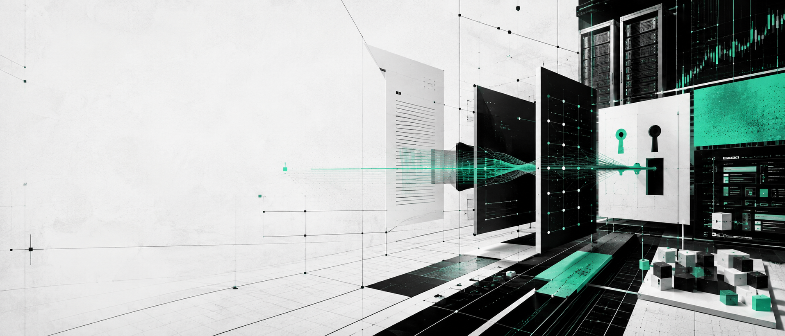
读者，早。
企业端同样在结算。Salesforce、Adobe、Resect 和教育工具都在把 AI 包进已有流程，卖点不再是会聊天，而是能不能减少客服成本、守住文档事实、接住课堂和会议这些具体场景。创作者和小公司今天要看的，是哪些 AI 能立刻帮你少返工，哪些只是把账单推迟到下个月。
The Verge 9 月 4 日报道，OpenAI CEO Sam Altman 为 GPT-6 Astra 上线后的混乱访问节奏公开道歉。报道提到，部分付费用户和开发者抱怨自己看得到发布会承诺，却拿不到稳定入口；OpenAI 随后解释称，最强能力会按安全、容量和账户类型分批开放。Astra 仍被定位为新一代旗舰模型，但这次风波先暴露的不是 benchmark，而是交付和预期管理。

Financial Times 9 月 4 日报道，Anthropic 正在调整 public benefit corporation 治理结构，为潜在 IPO 做准备。报道称，公司需要在坚持长期安全使命、接受外部资本、保护早期投资人权利之间重新平衡；投资人和员工都在关注 Claude 高速增长后，董事会和股东在关键商业决策中的权力边界。
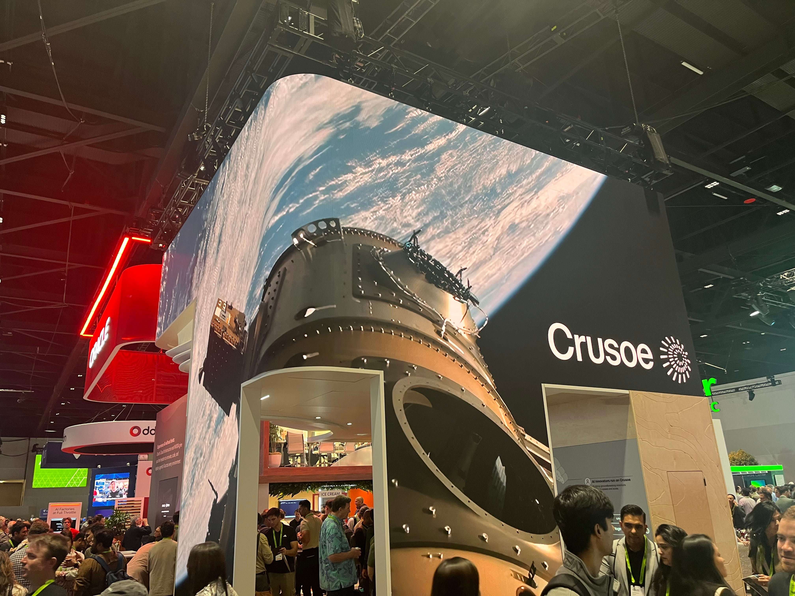
Bloomberg 9 月 4 日报道，AI infrastructure company Crusoe 正在推进新一轮数十亿美元融资，目标估值约 300 亿美元，用于扩建 AI 数据中心和电力配套。Crusoe 此前以能源与数据中心结合出名，如今客户需求来自训练和推理算力的持续膨胀。交易仍取决于最终条款和市场条件。
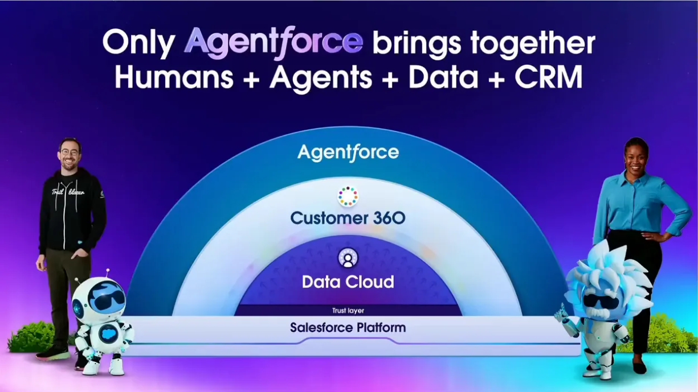
Reuters 9 月 4 日报道，Salesforce 在财报沟通中继续把 Agentforce 作为增长故事的核心，强调企业客户正在购买用于客服、销售和内部流程的 AI agent。公司给出的收入展望高于部分市场预期，但投资人仍在追问 AI 产品到底贡献多少增量、会不会蚕食既有 seat-based SaaS 收费。
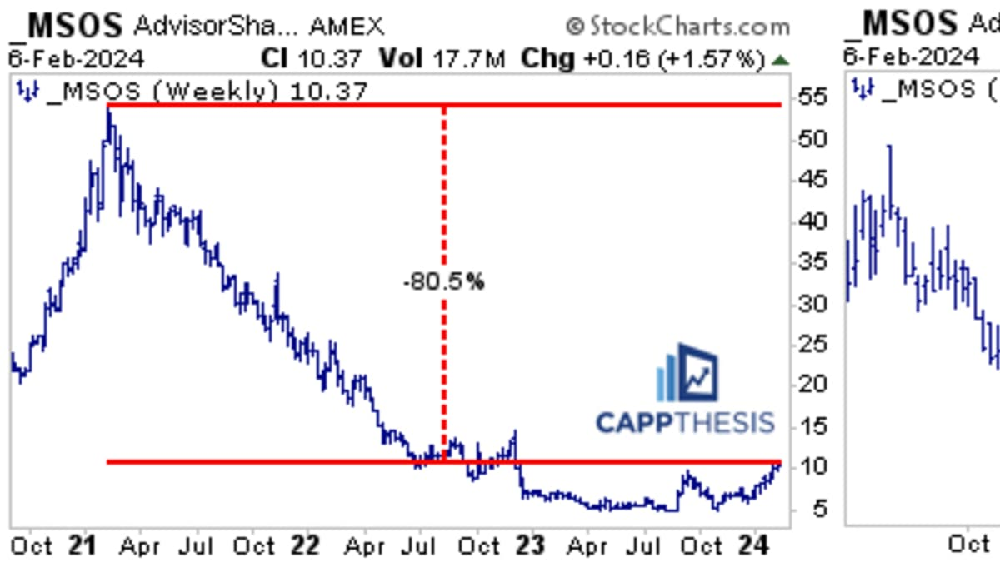
CNBC 9 月 4 日报道，Adobe 高管继续强调 Firefly、Acrobat AI Assistant 和企业内容供应链产品的商业化路径，重点是让品牌客户在合规素材、广告变体生成和文档工作流里使用 AI。Adobe 的优势是已有 Creative Cloud 与 Document Cloud 账户，但市场也在盯它能否抵住免费生成工具和新兴设计平台的价格压力。
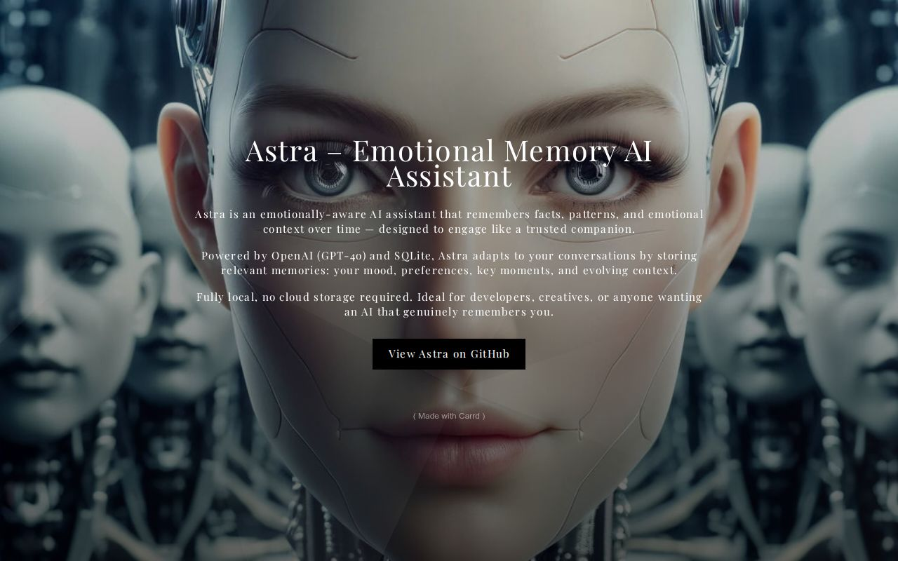
Wired 9 月 4 日跟进 OpenAI Astra 安全争议，重点放在 monitorability：模型能力提升后，安全团队更难只靠 chain-of-thought 观察判断它是否在绕开规则。OpenAI 的安全材料承认，高能力模型在 cyber、tool use 和长链任务中需要更多隔离、轨迹监控和访问限制。也就是说，模型更会干活的同时，外部可读性没有同步变好。
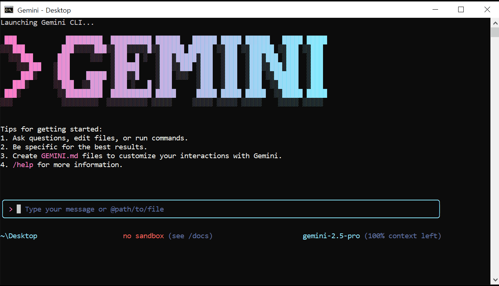
Google Developers Blog 9 月 4 日宣布 Gemini CLI 扩展开发环境集成，开发者可在 VS Code、JetBrains 系列和终端之间复用上下文，让 Gemini 帮忙解释代码、生成测试、执行重构建议并调用本地工具。Google 强调个人开发者仍有免费额度，企业侧则可通过 Google Cloud 控制权限、日志和数据边界。
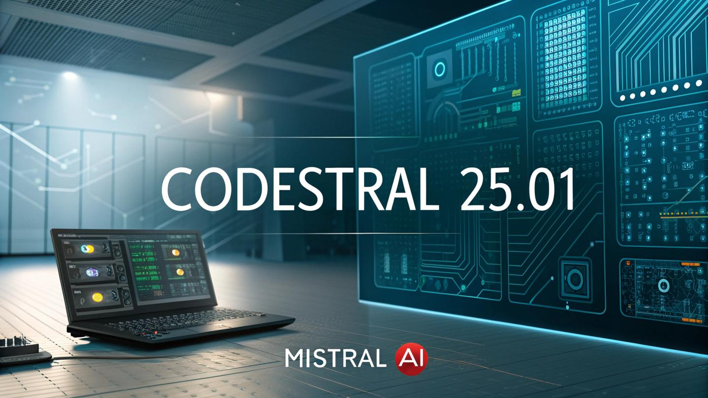
Mistral AI 9 月 4 日发布 Codestral 系列更新，主打更低延迟、更长上下文和代码补全、重构、测试生成场景。官方说明强调，模型可通过 La Plateforme 和企业部署渠道使用，并继续面向 IDE 插件、代码搜索和内部知识库场景优化。相比追逐最大参数，Mistral 把重点放在开发者每天能否低成本高频调用。
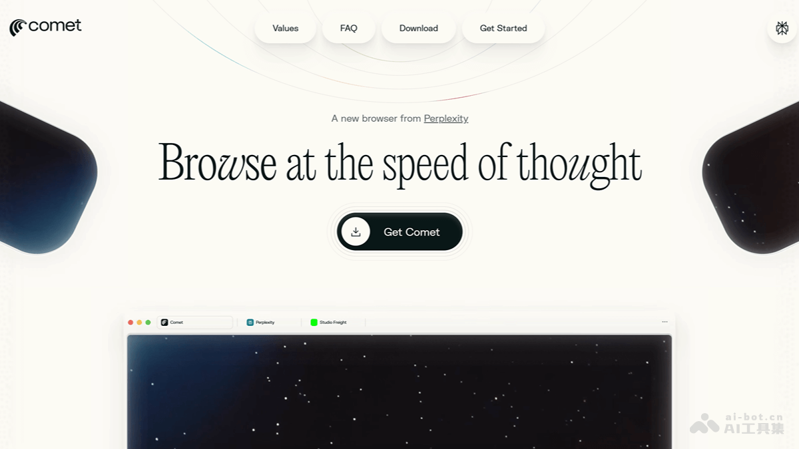
Perplexity 9 月 4 日宣布其 AI browser Comet 扩展到 iOS 和 Android waitlist。Comet 的卖点是把搜索、页面理解、任务代理和个人上下文放进浏览器层，而不是只停在问答框。移动端若能跑通，AI agent 将更接近用户每天真实的入口：网页、邮箱、日历、地图和支付跳转。
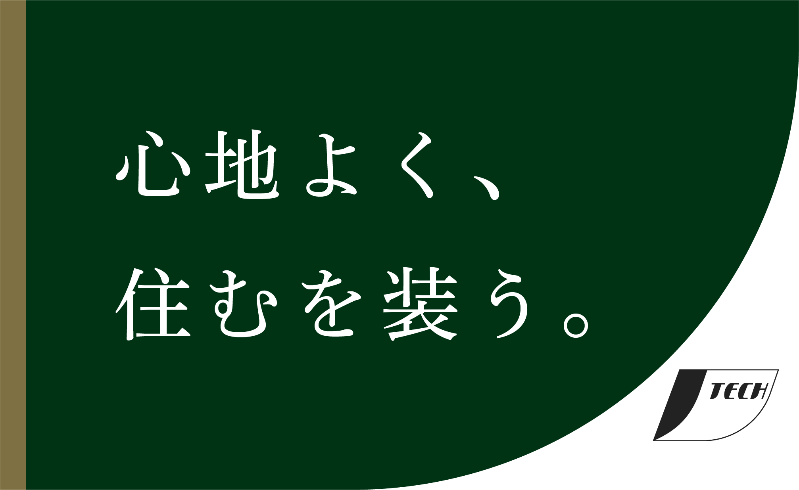
TechCrunch 9 月 4 日报道，AI startup Resect AI 从 stealth 中亮相并完成 2500 万美元融资，产品方向是为企业生成式 AI 工作流提供 hallucination guardrail。公司称其系统会在回答进入客户、员工或自动化流程前，检查事实依据、来源一致性和高风险断言。投资人看中的不是又一个聊天机器人，而是企业敢不敢把 AI 输出放进业务流程。
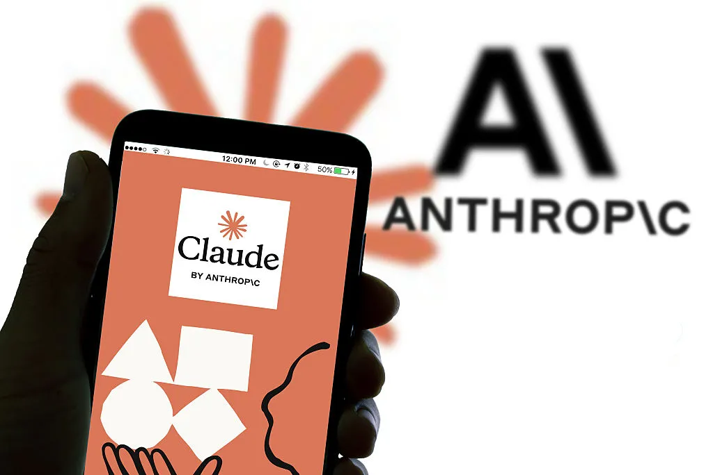
Anthropic 9 月 4 日宣布扩展 Claude for Education，与多所高校和在线学习平台合作，重点是把 Claude 接入课程讨论、写作反馈、研究助理和行政问答。官方强调产品会使用学习模式，引导学生拆解问题，而不是直接替学生交作业。学校关注的仍是学术诚信、数据保护和教师控制权。
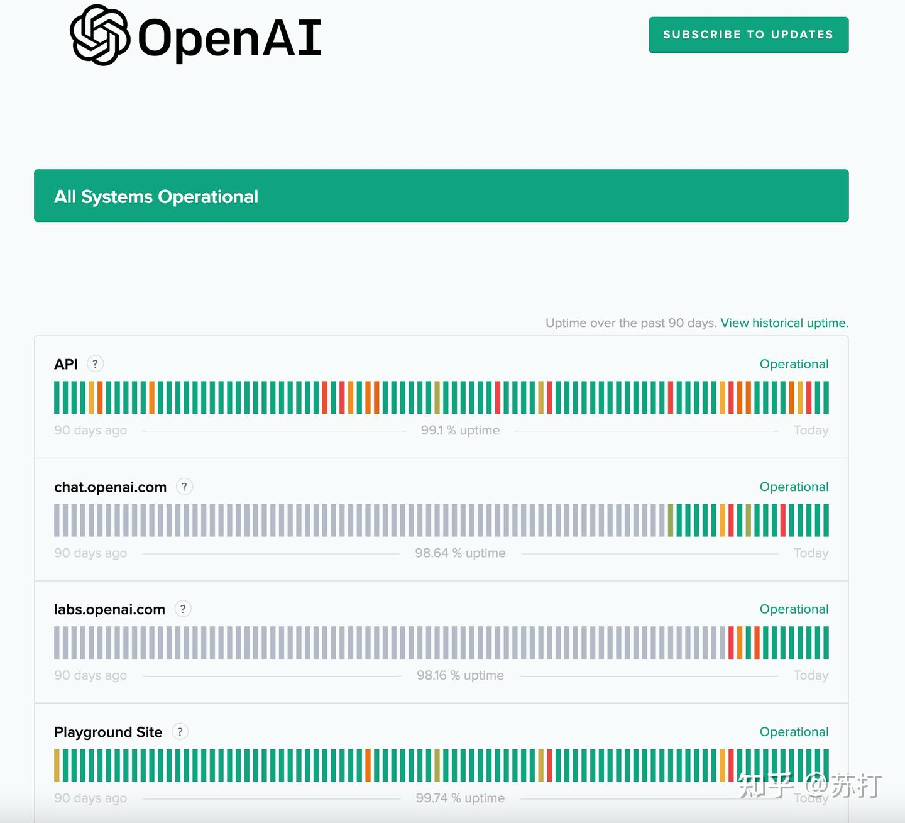
OpenAI 9 月 4 日更新企业连接器，扩展 ChatGPT 与 Google Drive、SharePoint、Slack、GitHub 和内部知识库的权限控制。官方说明称，管理员可配置索引范围、数据保留和 connector-level access，回答会尽量回到企业已有资料。这个方向延续 Astra 访问分层之后的产品逻辑：模型能力要嵌进组织数据，权限边界就必须跟上。
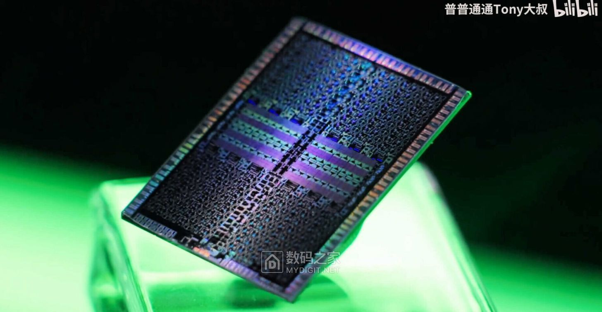
Reuters 9 月 4 日报道，美国政府继续评估对高端 AI 芯片出口和云算力转售的限制，焦点包括改版 Nvidia 加速器、海外数据中心访问以及中国客户间接获得算力的路径。企业游说重点放在收入、供应链和美国技术影响力；安全部门则担心先进算力被用于军事和网络能力提升。
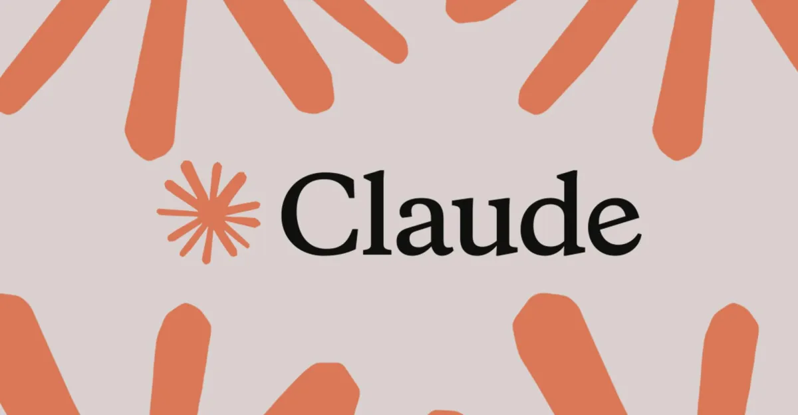
Anthropic 的治理调整之所以被资本市场盯住，是因为 Claude 增长已经把公司推到更高估值区间。Financial Times 9 月 4 日报道中提到，潜在 IPO 会让 public benefit corporation 的使命承诺面对更复杂的股东诉求。二级市场会问得更粗暴：安全投入占多少成本，商业化速度能不能支撑估值，OpenAI 和 Google 夹击下毛利如何守住。
Crusoe 的融资传闻把 AI 基建估值再次推高。Bloomberg 9 月 4 日称，公司目标估值约 300 亿美元，资金主要服务于数据中心扩张。投资逻辑很直接：只要大模型训练和推理需求继续增长，靠近能源、能快速交付机房、能签下长期客户的基础设施公司就会被重估。
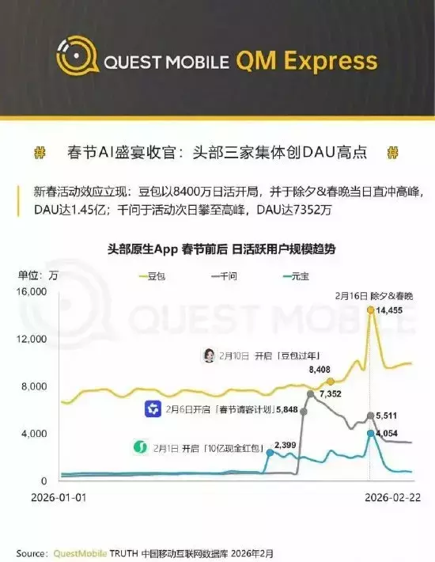
MarketWatch 9 月 4 日报道，C3.ai 在创始人 Tom Siebel 退居幕后、公司调整管理层后，仍面临增长放缓和亏损压力。公司继续强调企业 AI 应用和政府客户，但投资人更关心销售周期、客户留存和订阅收入稳定性。AI 概念能吸引注意，财报最终要回答现金流。
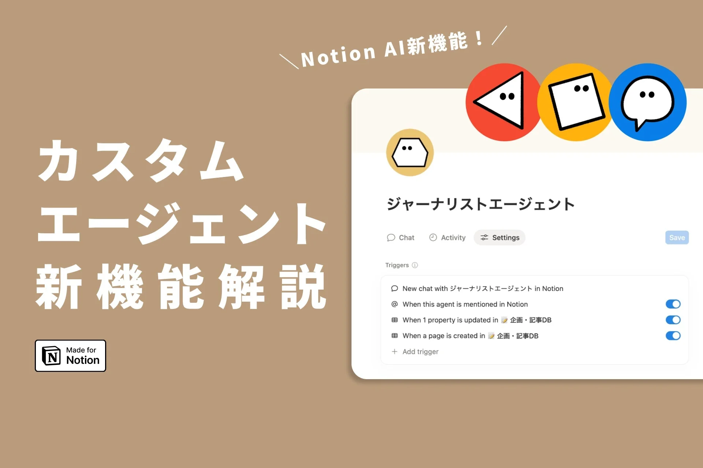
Notion 9 月 4 日更新 AI Meeting Notes，面向团队空间提供自动摘要、行动项提取、项目页面关联和权限继承。新版本强调记录会留在 Notion workspace 内，并可把会议结论直接挂到任务、文档和数据库条目上。它不是最炫的 agent，但贴着很多团队每天真正浪费时间的地方。